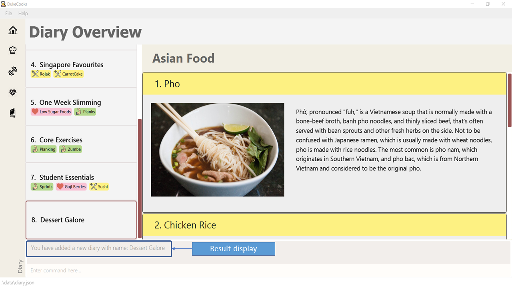

What is DukeCooks?
DukeCooks is a lifestyle desktop application, specially designed for busy, health-conscious individuals. As busy student project developers for DukeCooks, we understand that it can be daunting to keep track of various tasks and yet, manage a healthy lifestyle at the same time.
DukeCooks aims to simplify this by allowing you to manage various aspects of your lifestyle, all within a single app! In DukeCooks, you will be able to manage tasks, store recipes, plan workouts, monitor health and write diaries.
Not only that, DukeCooks runs on the command-line interface (CLI). This means that all the tasks mentioned above can be executed all within a single line, saving you even more time!
Who developed DukeCooks?
DukeCooks is developed by a group of Year 2 students from: School of Computing, National University of Singapore.
What is in this document?
This document provides you with information on the contributions made to DukeCooks by me. It summarises my contributions to DukeCooks in the following 3 main areas:
-
Overall Project
-
User Guide
-
Developer Guide
Contributions to Overall Project
Building the diary feature
The diary feature provide users with the ability to share their fitness and health tips. Furthermore, it allows users to view diaries in a simple and intuitive manner. The initial works for building the diary feature includes heavy referencing from the existing Address Book 3 (AB3) codebase.
Major Enhancements
Enhancement 1: Creating the ViewDiaryCommand
The ViewDiaryCommand is created to allow users to switch views between different diaries
This is specially designed so that users can switch diary views, without having to rely on clicking the mouse.
The functionality of ViewDiaryCommand is quite similar to that of ListCommand in AB3. I have modified the ListCommand
in AB3 to allow the user to provide an diary index and only display that corresponding diary.
Enhancement 2: Creating the AddPageCommand Page Input Form
If AddPageCommand is executed, it opens a Page Input Form for users to enter their page details.
As a page’s details can get quite lengthy, the Page Input Form is created to help users by providing a GUI interface that is more suited for lengthy inputs.
This enhancement required heavy works in terms of GUI and I had to ensure that the inputs provided in the Page Input Form are first validated before it can be executed as a command.
Minor Enhancements
Enhancement: Adding icons and colours to pages
I have added different icons and colours to represent a page’s type. By differentiating the pages through colours and icons, users are able to quickly identify the 3 different page types: health, exercise and food with one glance.
Code Contribution
Visit this link to check out my contributions made to DukeCooks.
Other contributions
Project management
-
Managed releases
v1.1,v1.2,v1.3(3 releases) on GitHub
Documentation
-
Minor cosmetic tweaks to contents of User Guide and Developer Guide.
(PR #181)
Bug Reports
-
Reported bugs and suggestions for other teams within the same class
Tool Integration
Contributions to User Guide
This section highlights my contributions to the User Guide for the diary feature. You may visit this link, to view the full User Guide. |
Diary
Want to share great recipes and workout tips with your friends? Look through the available commands in this section and start sharing!
A Closer Look at Diary Feature
In the diary feature, you will be able to look through all your available diaries and pages at one quick glance! Not only that, you can also enter different commands within the command box.
Still confused? The following diagram explains where you can find the available diaries, their corresponding pages and also highlights the command box, where different commands can be executed.
Adding a diary
Let’s get started by adding a diary using the add diary command!
Command: add diary
Format: add diary n/ <diary name>
Example usage: add diary n/ Desserts Galore
-
Enter the command in the command box and hit the Enter key. You are now adding a diary named "Dessert Galore" into DukeCooks.
 Figure 2. Adding a diary
Figure 2. Adding a diary -
If the command succeeds, you should see the following message in the result display and a new diary named "Dessert Galore" will be added.
Figure 3. Successfully added a diary
| Diary names are only limited to 25 characters. |
Deleting a diary
Accidentally created an unwanted diary? No worries! You can remove it with our delete diary command.
Command: delete diary
Format: delete diary <diary index>
Example usage: delete diary 8
-
Enter the command in the command box and hit the Enter key. In this case, you are deleting the diary at index 8, which is "Dessert Galore".
 Figure 4. Deleting a diary
Figure 4. Deleting a diary -
If the command succeeds, you will see the following message in the result display and the diary "Dessert Galore" will be removed.
 Figure 5. Successfully deleted a diary
Figure 5. Successfully deleted a diary
You may refer to this link for other diary commands that I have documented.
Contributions to Developer Guide
This section highlights my contributions to the Developer Guide for the diary feature. You may visit this link, to view the full Developer Guide. |
Diary feature
Implementation
The current implementation of Diary consists of the following:
-
Each
Diaryconsists of a uniqueDiaryName -
Each
Diarycontains an array list ofPage -
Each
Pageis identified by a uniqueTitle,PageType,Page DescriptionandPage Image -
Each class has their respective getter methods
The class diagram below gives an overview of the Diary class.

Implementation of diary commands
Diary class supports multiple commands. It includes:
-
AddDiaryCommand- Adds aDiaryinto DukeCooks -
DeleteDiaryCommand- Deletes aDiaryfrom DukeCooks -
EditDiaryCommand- Edits the specifiedDiarywith a newDiaryName -
ViewDiaryCommand- Views the specifiedDiaryusing the provided index -
FindDiaryCommand- Finds the specifiedDiaryusing the provided keyword -
ListDiaryCommand- Lists all available diaries to user -
AddPageCommand- Adds a newPageto the specifiedDiary -
DeletePageCommand- Deletes thePagein the specifiedDiary -
EditPageCommand- Edits various fields of the specifiedPage
All the above commands behave similarly. The commands will be parsed in DukeCooksParser first and based on their
types (i.e Add, Delete, Edit etc), the corresponding variant parsers will be invoked (i.e AddDiaryCommandParser,
DeleteDiaryCommandParser etc). After which, the corresponding command will be executed (i.e AddDiaryCommand,
DeleteDiaryCommand etc).
The figure below describes the execution of an DeleteDiaryCommand.

After a successful execution, the specified diary will be removed.
Implementation of Images
All images used in DukeCooks are copied into an internal data folder and all subsequent loading of images is done from within this internal folder. The following activity diagram explains how an image is created in DukeCooks:

Design Considerations
| Aspect | Option 1 (Chosen) | Option 2 |
|---|---|---|
Data structures used to store |
Pros Cons Our Choice |
Pros Cons |
Loading of images |
Defensively copies images into our internal data folder and all subsequent loading of images is done from this folder. Pros Cons Our Choice |
Load images directly from user’s directory Pros Cons |